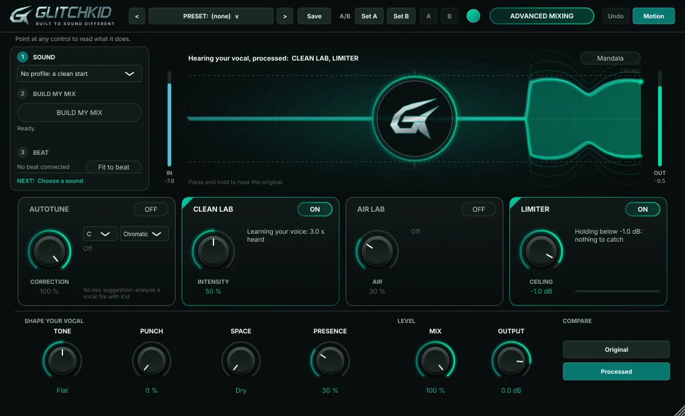

IN · 00Signal in motion
 Built to sound different.
Built to sound different.
Professional vocal production.
Less work. More music.
Free beta · VST3 · Mac with Apple Silicon
PROC · 01The instrument
Effortless on the surface. Powerful underneath.
Two workspaces, one engine. Home gets you to a starting mix fast. Advanced Mixing opens every stage. Change a control in one and the other follows.

On Home
- 01Choose a soundEight starting sounds, from Clean & Natural to Hard-Tuned Rap.
- 02Build My MixListens to your vocal for a few seconds and fits the sound to it. One Undo takes you back.
- 03Four modulesTune, Clean Lab, Air Lab and Limiter: one switch and one main control each.
- 04Original / ProcessedPress and hold the vocal to hear it untouched.
Advanced Mixing
Every stage, in detail.
The stages in the order a vocal is worked. Presets and A/B snapshots on every page.
Shape: EQ Lab (up to 16 bands, static or dynamic, with the live spectrum), the compressor, warmth and Air Lab.

MON · 02Hear it
Original. Processed.
The same take, before and after GlitchKid. Switch while it plays: the position stays where it is.
Awaiting genuine recordings
We'll only publish a real vocal recorded through GlitchKid and its untouched original, never a mock-up. Until then, nothing plays here.
ROUTE · 03Four steps
From raw take to starting mix.
- 01
Load your vocal.
Put GlitchKid on your vocal track and press play.
- 02
Choose your sound.
Pick one of eight starting sounds.
- 03
Build your mix.
Build My Mix listens for a few seconds and fits the sound to your voice.
- 04
Refine.
Shape it on Home, or go deep in Advanced Mixing. Compare with your original any time.
PROC · 04Inside the instrument
What's in the beta.
- Build My Mix
- Listens to your vocal, then fits your chosen starting sound to it: EQ, dynamics, Air Lab and the Space reverb. One Undo takes you back.
- Tune
- Pitch correction toward the key and scale you choose. Natural, Light or Hard, plus strength and speed. It doesn't detect your key.
- Clean Lab
- Measures your voice and treats rumble, low-mid build-up, harsh resonances and sharp S sounds, and shows what it's cutting.
- EQ Lab
- Up to 16 bands: bells, shelves, cuts from 6 to 96 dB/oct, notch, band pass and tilt; stereo, left, right, mid or side; any band can be dynamic.
- Air Lab
- Mid Air for clarity, High Air for air: two independent lifts that follow the voice, skip the gaps and ease off on S sounds.
- Space
- An algorithmic reverb with eight algorithms, three characters, freeze and nine vocal presets, alongside echo, width and doubling.
- Beat Lock
- Send your beat to GlitchKid's instrumental input; it compares the two and suggests small changes you review before applying.
- Output limiter
- Catches peaks at the end of the chain and shows how much it's really reducing.
- Presets & A/B
- Save your own sounds. Keep two snapshots and switch between them.
SYS · 05Compatibility
What you need.
- Format
- VST3
- Mac
- Apple Silicon (M1 and newer). Minimum macOS version: awaiting confirmation
- Windows
- Planned. Not available in this beta: there is no Windows build yet.
- Intel Mac · AU · AAX
- Not in this beta
- Tested host
- FL Studio 2025 on macOS. Other VST3 hosts: awaiting confirmation
- Latency
- 6 samples as standard. About 31 ms more while Tune is on, and 1.5 ms while the Limiter is on. Always reported to your DAW for compensation.
- Installation
- The beta build isn't signed or notarised by Apple yet, so macOS will warn you before it opens. Beta testers get step-by-step instructions.
- Price
- The beta is free.
- Support
- Awaiting confirmation
OUT · 06Free beta
Join the beta waitlist.
The beta is free. Leave your email and we'll write when places open. Joining the waitlist doesn't guarantee a place.
FAQ · 07Questions
FAQ
What is GlitchKid?
A vocal-production plug-in for independent artists. Pick a starting sound, let it build a mix from your own vocal, then refine it, either with a few big controls or in full detail.
Is the beta free?
Yes. The beta is free. Joining the waitlist doesn't guarantee a place; if one opens for you, we'll email you the next steps.
Which DAWs does it work in?
It's a VST3 plug-in. It's been tested in FL Studio 2025 on macOS. Other VST3 hosts are part of what the beta is for, so their status is awaiting confirmation.
Does it run on Windows?
Not yet. A Windows version is planned, but there is no Windows build in this beta. It also doesn't run on Intel Macs.
How do I install it?
Beta testers get step-by-step instructions. The beta build isn't signed or notarised by Apple yet, so macOS will warn you before it opens; the instructions explain how to allow it.
Does it have reverb?
Yes: Space, an algorithmic reverb with eight algorithms (room, chamber, plate, hall, cathedral, ambience and two modulated spaces), warm, classic and modern characters, and nine vocal presets. Build My Mix chooses one for your starting sound.
Does it detect my key?
No. You choose the key and scale; Tune pulls your voice toward them.
What do you do with my details?
We use them only to run the GlitchKid beta waitlist and contact you about the beta. Full privacy policy awaiting confirmation.